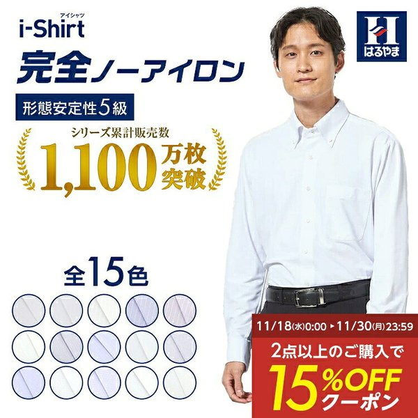
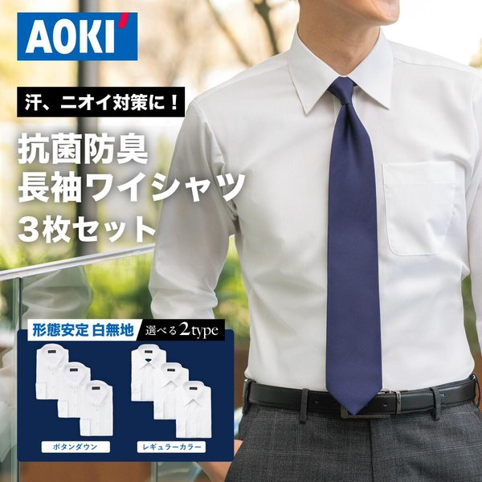
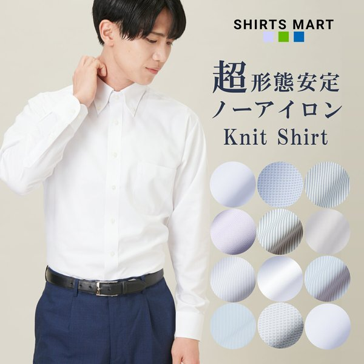
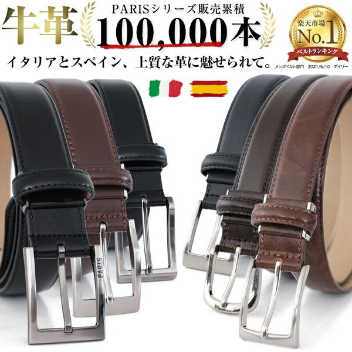
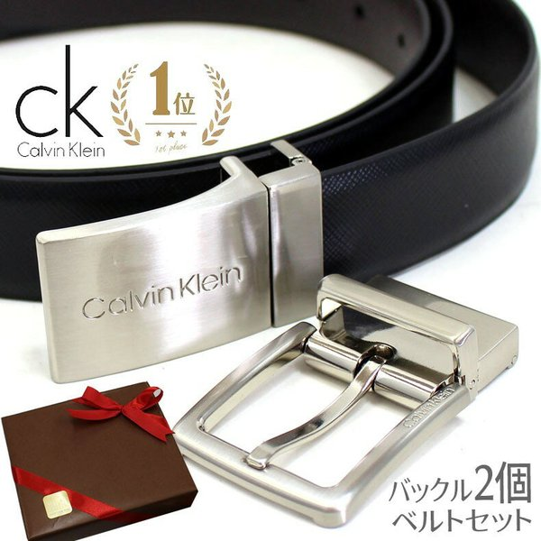
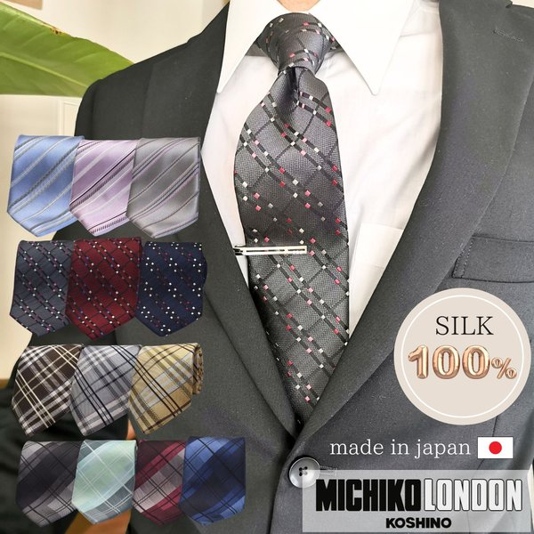
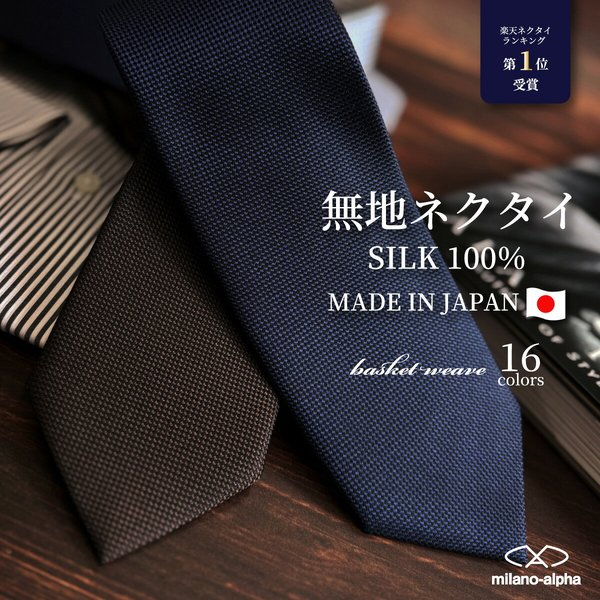
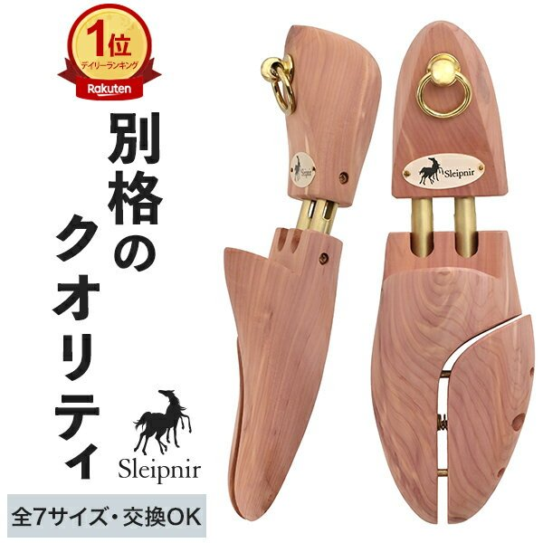
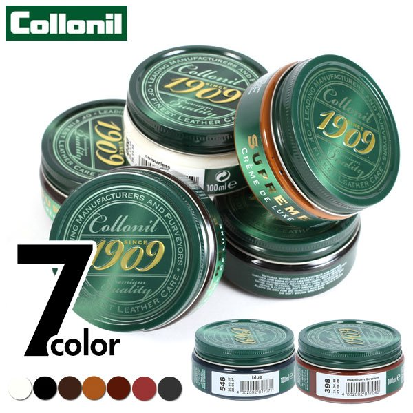
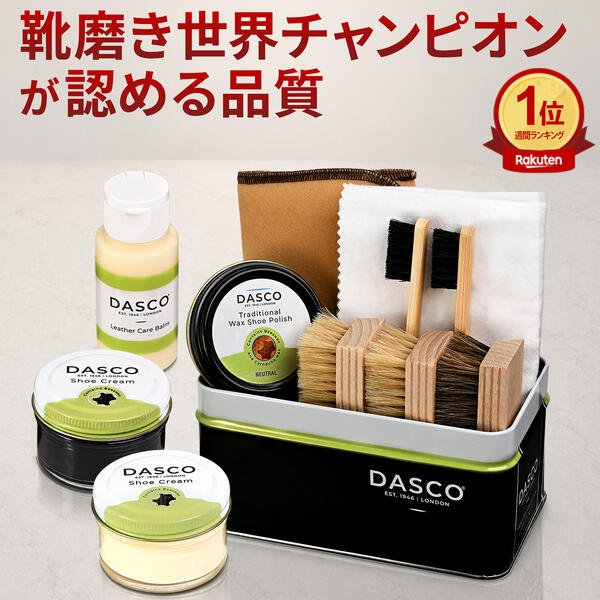

【2026年・メンズ身だしなみ】ノーアイロンシャツ・本革ベルト・シルクネクタイ・シューキーパー・革靴ケアの10選｜はるやま i-Shirt・AOKI・SHIRTS MART・BELTON・カルバンクライン・MICHIKO LONDON・スレイプニル・コロニル・ダスコを実売価格で比較
スーツを着る日の手間は、シャツのアイロンと靴の手入れに集まります。この2つを道具で減らすと、朝の準備が10分単位で短くなります。年末は冠婚葬祭や新年の挨拶も重なるので、身だしなみを整える道具を揃えるのにちょうどいい時期です。
選ぶ軸は3つです。「まずシャツの加工」。完全ノーアイロンと形態安定は、洗濯後に干すだけでシワが伸びる加工です。毎日着るなら、この加工の有無で朝の負担が変わります。「次にベルトの調整方法」。長さを自分でカットできるタイプは、体格に合わせて調整できます。「最後に靴の手入れ」。クリームとブラシとシューキーパーがあれば、革靴は数年単位で長持ちします。なお、レビュー件数が50件に満たない商品は記事内に実数を明記しています。
本記事では、楽天市場で人気・高評価のシャツ・ベルト・ネクタイ・靴ケア用品10選を、実売価格とレビュー評価つきで写真付き紹介します。
- おすすめ10選 スペック・特徴比較表
- BEST 1｜i-Shirt 完全ノーアイロン 長袖ワイシャツ（15種類から選べる）
- BEST 2｜AOKI 抗菌防臭 長袖ワイシャツ 3枚セット（ボタンダウン）
- BEST 3｜超形態安定 ノーアイロン ニットシャツ 長袖
- BEST 4｜牛革 イタリアンレザー ビジネスベルト（長さ調整カット可）
- BEST 5｜カルバンクライン ベルトセット（バックル2個・リバーシブル）
- BEST 6｜MICHIKO LONDON シルク100% 日本製 ネクタイ セット
- BEST 7｜京都丹後産 シルク100% 日本製 無地ネクタイ
- BEST 8｜スレイプニル トラディショナル シューキーパー（レッドシダー）
- BEST 9｜コロニル 1909 シュプリームクリームデラックス 100ml
- BEST 10｜ダスコ 靴磨きセット スターターセット
- 【読者負担0円】買わなくても得する無料サービス
- まとめ：シャツ・ベルト・ネクタイ・靴ケア10選の選び方
| 順位 | 商品名 | ブランド | 最大の特徴・おすすめ理由 | 総合評価 |
|---|---|---|---|---|
| BEST 1 | i-Shirt 完全ノーアイロン 長袖ワイシャツ（15種類から選べる） | はるやま | 洗って干すだけでシワが伸びる | 4.56 |
| BEST 2 | AOKI 抗菌防臭 長袖ワイシャツ 3枚セット（ボタンダウン） | AOKI | 抗菌防臭で汗の季節も安心 | 4.34 |
| BEST 3 | 超形態安定 ノーアイロン ニットシャツ 長袖 | SHIRTS MART（シャツマート） | 編み地で伸び、動きやすい | 4.60 |
| BEST 4 | 牛革 イタリアンレザー ビジネスベルト（長さ調整カット可） | BELTON（ベルトン） | 長さを自分でカットして調整できる | 4.37 |
| BEST 5 | カルバンクライン ベルトセット（バックル2個・リバーシブル） | カルバンクライン（Calvin Klein） | ベルト1本で色とバックルを替えられる | 4.40 |
| BEST 6 | MICHIKO LONDON シルク100% 日本製 ネクタイ セット | MICHIKO LONDON | シルク100%の日本製 | 4.63 |
| BEST 7 | 京都丹後産 シルク100% 日本製 無地ネクタイ | milano-alpha（ミラノアルファ） | 京都丹後産シルク100%の日本製 | 4.54 |
| BEST 8 | スレイプニル トラディショナル シューキーパー（レッドシダー） | スレイプニル（Sleipnir） | レッドシダーが湿気を吸って臭いを抑える | 4.67 |
| BEST 9 | コロニル 1909 シュプリームクリームデラックス 100ml | コロニル（Collonil） | 革に栄養を与えて乾燥を防ぐ | 4.73 |
| BEST 10 | ダスコ 靴磨きセット スターターセット | ダスコ（DASCO） | 黒と無色のクリームが入る | 4.68 |
i-Shirt 完全ノーアイロン 長袖ワイシャツ（15種類から選べる）

はるやまのi-Shirtは、洗って干すだけでシワが伸びる完全ノーアイロンのワイシャツです。日本製の生地に、吸汗速乾とストレッチ、防臭の加工を入れています。襟はボタンダウンとワイドカラー、色は15種類から選べ、11月中は15%OFFクーポンが出ています。楽天市場での実売価格は約3,990円（2026年11月時点）。
- 洗って干すだけでシワが伸びる
- 15種類から色と襟を選べる
- 日本製生地で吸汗速乾・防臭
- 完全ノーアイロンでも、乾かし方によっては袖口にシワが残る
AOKI 抗菌防臭 長袖ワイシャツ 3枚セット（ボタンダウン）

AOKI公式のワイシャツは、抗菌防臭と形態安定の加工を施したボタンダウンです。3枚セットで1枚あたりの単価を抑えられ、レギュラーカラーとサイズを選べます。汗をかく季節でもにおいを抑えられ、洗濯後はアイロンをかけずに着られます。楽天市場での実売価格は約5,550円（2026年11月時点）。
- 抗菌防臭で汗の季節も安心
- 3枚セットで1枚あたりの単価を抑えられる
- 形態安定でアイロンが要らない
- ボタンダウンなので、襟元はきちんと感よりカジュアル寄り
超形態安定 ノーアイロン ニットシャツ 長袖

SHIRTS MARTのニットシャツは、編み地を使った超形態安定のノーアイロンシャツです。伸縮性があり、腕を動かしても突っ張りにくいのが特徴。365日出荷で最短翌日届き、色違いで揃えられます。洗濯機で洗って干すだけで形が戻ります。楽天市場での実売価格は約2,690円（2026年11月時点）。
- 編み地で伸び、動きやすい
- ノーアイロンで洗濯後そのまま着られる
- 365日出荷で買い足しやすい
- ニット素材なので、綿のブロードほど張りがない
牛革 イタリアンレザー ビジネスベルト（長さ調整カット可）

BELTONのビジネスベルトは、牛革のイタリアンレザーを使った定番です。バックルを外してベルトの長さを自分でカットできるので、体格に合わせて調整できます。黒・茶・ネイビーの3色で、スーツにもジャケットにも合わせやすく、冠婚葬祭にも使えます。楽天市場での実売価格は約2,698円（2026年11月時点）。
- 長さを自分でカットして調整できる
- 牛革のイタリアンレザー
- 黒・茶・ネイビーの3色
- カット式なので、一度切ると長くはできない
カルバンクライン ベルトセット（バックル2個・リバーシブル）

カルバンクラインのベルトセットは、リバーシブルのベルト1本とバックル2個を組み合わせた商品です。表と裏で色を変えられ、バックルを替えれば1本で2通り以上に使えます。ギフトボックス付きで、クリスマスや誕生日のプレゼントにも向きます。楽天市場での実売価格は約6,900円（2026年11月時点）。
- ベルト1本で色とバックルを替えられる
- バックルが2個付属
- ギフトボックス付き
- ブランド品なので、レザーの手入れは定期的にしたほうがよい
MICHIKO LONDON シルク100% 日本製 ネクタイ セット

MICHIKO LONDONのネクタイは、シルク100%を日本で織った商品です。柄の違うネクタイを組み合わせたセットで、スーツの色に合わせて選べます。シルクの光沢があり、結婚式や就職祝いの贈り物にも使える化粧箱入りです。楽天市場での実売価格は約5,280円（2026年11月時点）。
- シルク100%の日本製
- 柄の違うネクタイを選べる
- 贈り物に使える化粧箱入り
- セットの柄は組み合わせが決まっているので、好みに合うか確認する
京都丹後産 シルク100% 日本製 無地ネクタイ

milano-alphaの無地ネクタイは、京都丹後産のシルクを100%使って日本で縫製した商品です。バスケット織りで表面に細かい柄が出て、無地でも光の当たり方で表情が変わります。ネイビー、ブルー、ワイン、グレーから選べ、ビジネスにも式典にも合います。楽天市場での実売価格は約3,900円（2026年11月時点）。
- 京都丹後産シルク100%の日本製
- バスケット織りで光沢が出る
- 4色から選べる
- レビュー78件で、無地なので柄物より個性は出ない
スレイプニル トラディショナル シューキーパー（レッドシダー）

スレイプニルのシューキーパーは、レッドシダーの木で作った靴型です。靴に入れておくと、脱いだあとのシワを伸ばし、湿気を吸って型崩れを防ぎます。サイズ交換ができ、楽天のランキングで1位を取った商品です。革靴を長く履きたい人ほど効果が出ます。楽天市場での実売価格は約7,700円（2026年11月時点）。
- レッドシダーが湿気を吸って臭いを抑える
- 靴のシワを伸ばして型崩れを防ぐ
- サイズ交換に対応
- 木製なので、靴のサイズに合わないと効果が出にくい
コロニル 1909 シュプリームクリームデラックス 100ml

コロニルはドイツの靴ケアブランドで、1909 シュプリームクリームは革に栄養を与えて艶を出すクリームです。カラーレスのほか色付きがあり、革靴の色を補えます。1本あると、履く前の手入れが数分で済みます。楽天市場での実売価格は約2,857円（2026年11月時点）。
- 革に栄養を与えて乾燥を防ぐ
- 色付きを選べば小傷の色補修にも使える
- ドイツ製の定番クリーム
- 塗りすぎると革がベタつくので、薄く伸ばして磨く
ダスコ 靴磨きセット スターターセット

ダスコのスターターセットは、クリーム2色とブラシ、クロスをまとめた靴磨きの入門セットです。黒と無色のクリームが入り、黒い革靴と茶色の革靴を1セットで手入れできます。工具をそろえる手間がなく、初めて革靴を買った人がそのまま使えます。楽天市場での実売価格は約3,630円（2026年11月時点）。
- 黒と無色のクリームが入る
- ブラシとクロス付きですぐ磨ける
- 初めての革靴の手入れに向く
- セットのクリームは小さいので、頻繁に磨く人はすぐ使い切る
この記事の商品を買う前に、まずは無料で得する選択肢をチェック。どれも登録・利用は0円で、無料期間中に解約すれば料金はかかりません。読みたい雑誌がある人、ポイントを貯めたい人、アンケートなら気軽という人、それぞれに合うものを選べます。
初回31日無料・無料期間中に解約すれば0円 → 楽天ポイントモール｜登録無料で毎日ポイ活
買い物なしでもポイントが貯まる無料サービス → 楽天インサイト｜アンケートに答えてポイント
登録無料・すきま時間のアンケートで貯まる → 楽天カード｜年会費永年無料
新規発行・年会費ずっと0円 →
4つのサービスの違いと使い分けは「出費0円で得する！買わずにポイントが貯まる無料サービス厳選4選」でまとめています。
💡 まとめ：シャツ・ベルト・ネクタイ・靴ケア10選の選び方
身だしなみは、シャツ・ベルト・ネクタイ・靴の4つを揃えると一通り整います。シャツは、はるやまのi-Shirt完全ノーアイロン、AOKIの抗菌防臭ワイシャツ3枚セット、SHIRTS MARTの超形態安定ニットシャツ。ベルトは、長さをカットできるBELTONの牛革ベルトと、バックル2個付きのカルバンクラインのベルトセット。ネクタイは、MICHIKO LONDONのシルク100%セットと、京都丹後産シルクのmilano-alphaの無地。靴まわりは、スレイプニルのレッドシダー製シューキーパー、コロニルのシュプリームクリーム、ダスコの靴磨きセット。まずはシャツ1枚と靴の手入れセットから揃えると、翌朝から効果が出ます。
楽天市場では「5と0のつく日」や「お買い物マラソン」などのキャンペーンに合わせて購入すると、ポイント還元が最大化してお得に手に入ります。ぜひチェックしてみてくださいね。